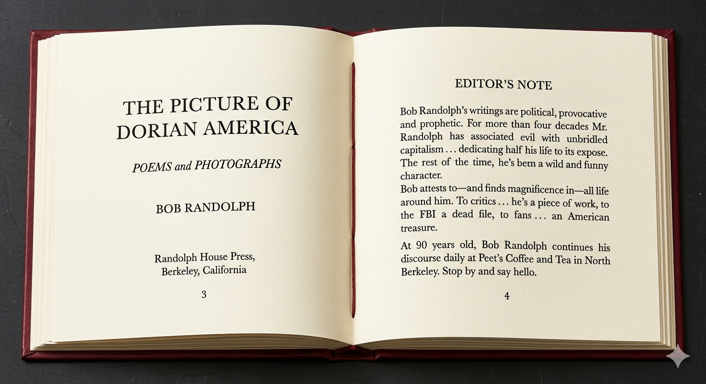

Home
About Bob
Books
Chapbooks
Photography
Taped Live Readings
Full Index (1,775 poems)
A Working Archive — Prototype
Bob
Randolph
El Tecolote Blanco · the White Owl · Revolutionary Poet
The Picture of Dorian America
